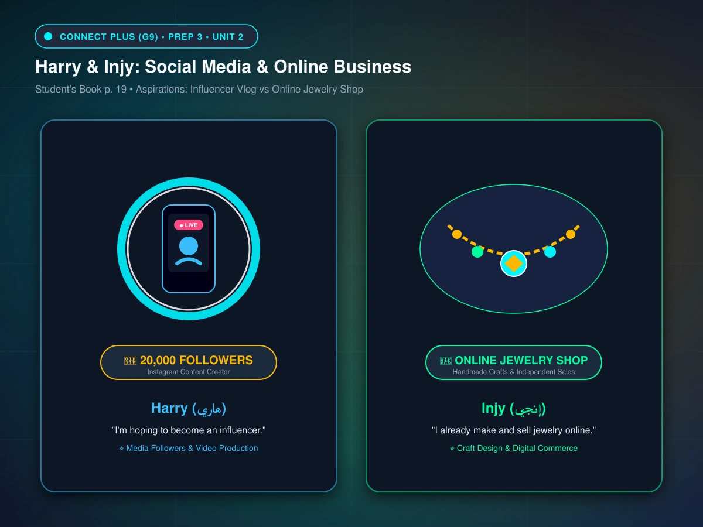

Unit 2 - Lessons 1 & 2: Changes (التغيرات والمستقبل)
المفردات الكاملة (51 كلمة)، استوديو القراءة والقصص التفاعلية (3 كتب مصورة عبر StoryEngine مع القارئ الصوتي التلقائي)، محرك المحادثات التفاعلية الناطقة (Interactive Dialogues)، شرح زمن المستقبل المستمر (Future Progressive)، تصريف الأفعال، التعريفات، المترادفات واللواحق، واختبار شامل 35 سؤالاً 🎯
🌟 المفردات الرئيسية (Key Vocabulary) - 20 كلمة:
اضغط على أيقونة الصوت 🔊 للاستماع للنطق الدقيق، وتعرّف على التوضيح البسيط والمثال العملي لكل كلمة.
Noun
ambition
المعنى: طموح
💡 التوضيح: الرغبة القوية والحلم الداخلي لتحقيق هدف كبير وناجح في حياتك.
Her biggest ambition is to become a famous doctor.
💬 طموحها الأكبر هو أن تصبح طبيبة مشهورة.
Noun
law
المعنى: قانون / دراسة الحقوق
💡 التوضيح: القواعد الرسمية التي تنظم حياة الناس، أو دراسة القانون بكلية الحقوق.
He decided to study law at university to defend innocent people.
💬 قرر دراسة القانون في الجامعة للدفاع عن الأبرياء.
Noun
influencer
المعنى: شخص مؤثر (على وسائل التواصل الاجتماعي)
💡 التوضيح: شخص يمتلك متابعين كثر على منصات التواصل ويؤثر في آراء واختيارات الجمهور.
Harry hopes to become a successful influencer on Instagram.
💬 يأمل هاري أن يصبح صانع محتوى ومؤثراً ناجحاً على إنستغرام.
Noun
career
المعنى: مهنة / مسار وظيفي
💡 التوضيح: المشوار العملي والمهني التراكمي في مجال معين طوال سنوات العمل.
She wants a rewarding career in technology.
💬 تريد مساراً مهنياً ناجحاً ومثمراً في مجال التكنولوجيا.
Noun (plural)
extreme sports
المعنى: رياضات خطيرة ومثيرة
💡 التوضيح: رياضات تتطلب شجاعة وتحمل مخاطر عالية مثل تسلق الصخور أو القفز بالمظلات.
Rock climbing and skydiving are popular extreme sports.
💬 يُعد تسلق الصخور والقفز بالمظلات من الرياضات الخطيرة الشهيرة.
Noun
performer
المعنى: مؤدٍ / فنان استعراضي / ممثل
💡 التوضيح: فنان يقدم عروضاً موسيقية أو مسرحية أو تمثيلية حية للجمهور.
He is a talented performer in the school drama group.
💬 إنه مؤدٍ موهوب في فريق التمثيل المدرسي.
Noun
university
المعنى: جامعة
💡 التوضيح: صرح التعليم العالي بعد الثانوية لدراسة تخصصات كالطب والهندسة والحقوق.
Courtney wants to go to university and study to be a doctor.
💬 تريد كورتني الذهاب للجامعة ودراسة الطب لتصبح طبيبة.
Noun
follower
المعنى: متابع
💡 التوضيح: شخص يتابع بانتظام منشورات وتحديثات حساب معين على مواقع التواصل.
He gained over 20,000 followers on his social media page.
💬 حصل على أكثر من 20,000 متابع على صفحته.
Noun
business
المعنى: عمل / تجارة / مشروع تجاري
💡 التوضيح: نشاط تجاري لإنتاج أو بيع السلع والخدمات وتحقيق الأرباح.
Injy started her own online business selling jewelry.
💬 بدأت إنجي مشروعها التجاري الخاص عبر الإنترنت لبيع المجوهرات.
Noun
wedding
المعنى: حفل زفاف / عرس
💡 التوضيح: الاحتفال الذي يجمع الأهل والأصدقاء بمناسبة عقد الزواج.
They are planning to have a big wedding with all their relatives.
💬 يخططون لإقامة حفل زفاف كبير مع جميع أقاربهم.
Verb & Noun
chat (chatted)
المعنى: يدردش / دردشة
💡 التوضيح: حديث ودي خفيف مع الأصدقاء وجهاً لوجه أو كتابياً عبر الإنترنت.
We sat in the cafe and chatted about our future plans.
💬 جلسنا في المقهى ودردشنا حول خططنا المستقبلية.
Verb
follow (followed)
المعنى: يتابع
💡 التوضيح: الضغط على زر المتابعة لرؤية منشورات شخص، أو السير وراء خطى قائد.
Millions of teenagers follow their favorite athletes online.
💬 يتابع ملايين المراهقين أبطالهم المفضلين عبر الإنترنت.
Noun
celebrity
المعنى: شخص مشهور / نجم
💡 التوضيح: شخصية معروفة لدى عامة الناس في الفن، الرياضة، أو الإعلام.
Tom Hanks is a beloved celebrity known for great movies.
💬 توم هانكس نجم وشخص مشهور محبوب بأفلامه المتميزة.
Noun
product
المعنى: منتج / سلعة
💡 التوضيح: الشيء الذي يُصنع أو يُنتج للبيع في الأسواق للمستهلكين.
Companies use social media to advertise and sell their products.
💬 تستخدم الشركات وسائل التواصل للإعلان عن منتجاتها وبيعها.
Digital apps allow you to make secure online payments easily.
Verb
book (booked)
المعنى: يحجز (تذكرة أو موعد)
You can book doctor's appointments directly using modern apps.
Noun
taste
المعنى: مذاق / طعم / ذوق
Future VR headsets might even allow users to experience digital tastes.
Noun
headset
المعنى: سماعة رأس / نظارة الواقع الافتراضي
Put on your virtual reality headset to explore the 3D world.
Noun
instance
المعنى: مثال (for instance = على سبيل المثال)
For instance, many people use apps to order groceries.
Noun
site
المعنى: موقع إلكتروني أو جغرافي
This educational site offers interactive quizzes for students.
Adjective
comfortable
المعنى: مريح
The new VR headsets are lightweight and very comfortable to wear.
Noun
exhibition
المعنى: معرض فني أو تكنولوجي
We visited a fascinating technology exhibition in Cairo.
Noun
explanation
المعنى: شرح وتوضيح
The teacher gave a clear explanation of the grammar rule.
Noun Phrase
critical thinking
المعنى: التفكير النقدي التحليلي
Critical thinking helps students evaluate information wisely.
Adjective
common
المعنى: شائع وعام ومألوف
Smartphones have become very common in everyday life.
📚 Connect Plus (G9) • Unit 2 Interactive Storybooks
استوديو القراءة والقصص التفاعلية (3 Interactive Readings)
اختر كتاب القراءة المطلوب لتصفحه داخل محرك الكتاب التفاعلي ثلاثي الأبعاد مع الصور المعبرة، القارئ الصوتي التلقائي، والترجمة والكلمات المفتاحية 🎧
🖼️ Scene 1 of 4

Teenager managing digital content and followers on social media alongside handcrafted online business
📖 Book ReaderPage 1 / 4
Harry & Injy: Influencers & Online Business
"When I was younger, I thought I was going to become a famous footballer. Now I know that won't happen, but I'm hoping to become an influencer – I have 20,000 followers on Instagram now!" — Harry
💡 الترجمة:
"عندما كنت أصغر سناً، كنت أعتقد أنني سأصبح لاعب كرة قدم مشهوراً. والآن أعلم أن ذلك لن يحدث، لكنني آمل أن أصبح مؤثراً على وسائل التواصل – لدي الآن 20,000 متابع على إنستغرام!" — هاري
famous footballer (لاعب مشهور)influencer (مؤثر)followers (متابعين)own business (مشروع خاص)jewelry online (مجوهرات عبر الإنترنت)
Scene 1 of 4
📝
Pop Quiz • تدرب على أسئلة الفهم القرائي (SB p. 19 & WB p. 11)
Vocabulary In Context & Comprehension Check
أسئلة الفهم من كتاب الطالب والتمارين التفاعلية مع التصحيح الفوري
1. Why did Harry change his childhood dream of being a footballer?
2. What does Injy do to earn money and start her own business?
3. According to the lecture (SB p. 21), how will users experience social media in the future?